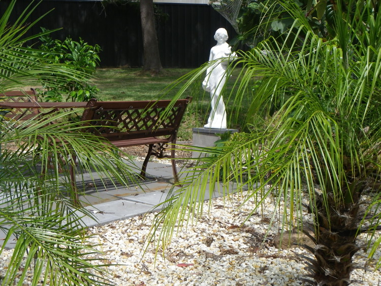

|
Wereketaba is just a short drive from the major centres of the Hunter Valley, yet it is a world away from the hustle and bustle of the city. We invite you to wander around our one hectare (2½ acre) property, set among the spotted gums and ironbarks, with beautiful native gardens, fruit trees, rolling lawns and resident kookaburras, water dragons, wild ducks and other local fauna.
Enjoy morning or afternoon tea, or a picnic lunch, at one of the "rest areas" around the property. Our large swimming pool is also here for your enjoyment, and the children’s play area, with swings, climbing frame and blackboard, will provide hours of enjoyment for the kids.”
Although in a country setting, Werekataba is:
Just a few minutes from the shores of beautiful Lake Macquarie (including the 15km walkway/cycleway along the northern edge of the lake) and the lakeside village of Warners Bay, with its delightful restaurants and cafes. 10 minutes from the shopping and entertainment hub of Charlestown. 10 minutes from Blackbutt nature reserve, with cuddly koalas and other native fauna. 20 minutes from Newcastle's CBD, cultural precinct and historic working harbour. 20 minutes from the pristine beaches of Redhead, Merewether, Newcastle and Nobbys (and others in between) and the rugged beauty of the Glenrock State Conservation Area. Just one hour from the Hunter vineyards, the Watagans National Park and the pristine beaches of Port Stephens. In 2011 Lonely Planet voted Newcastle one of its Top 10 Cities.
|

|